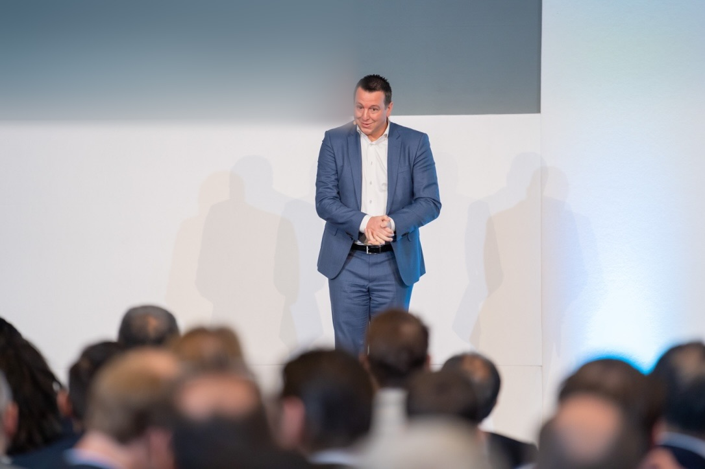
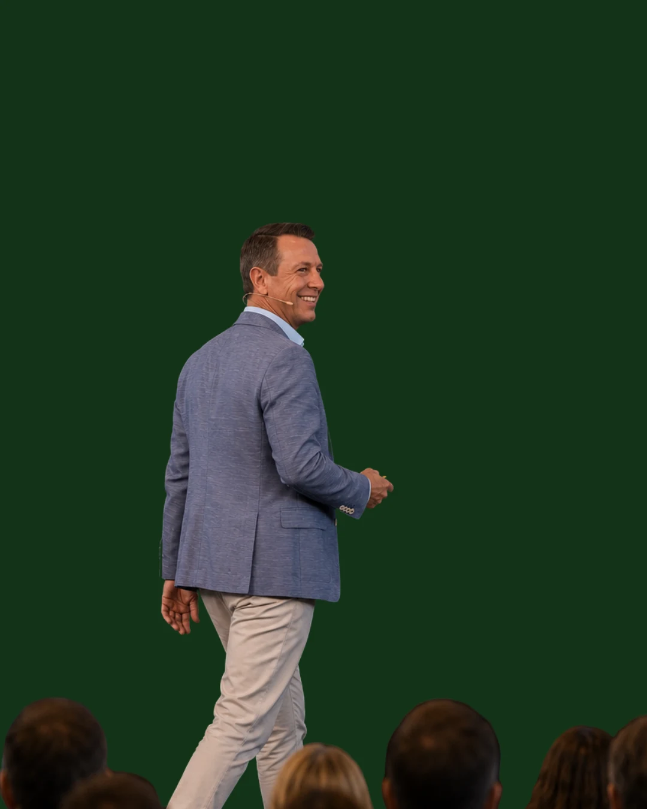
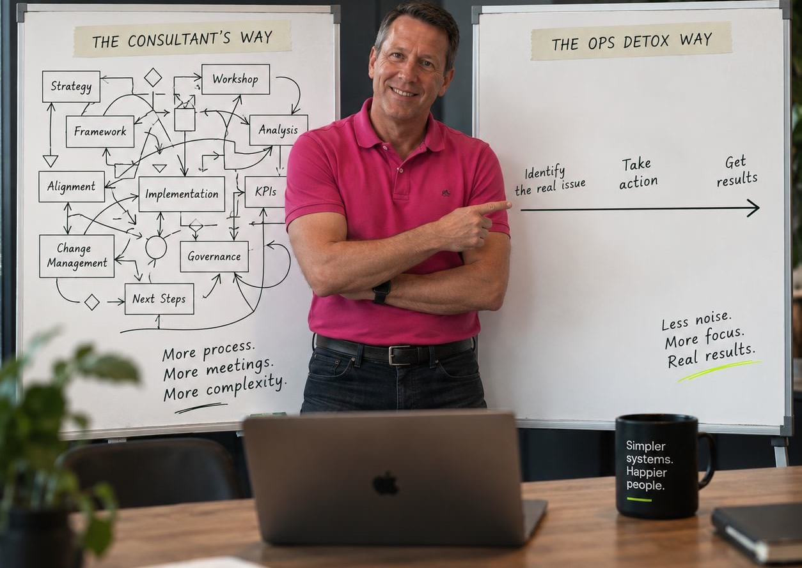

In his practical keynotes, Oscar de Grauw shows founders and leadership teams how to strip out the meetings, reports and approvals that eat their week, so they win back time to grow the company.
The calendar runs the week. Meetings and reports that once had a purpose keep running out of habit, and the hours meant for growth disappear into them.
Every decision lands on one desk. The team waits for the founder's approval, even on small things, so work stops whenever the founder is busy or away.
Problems surface too late. People see what's going wrong weeks before anyone says it out loud, and by then it's expensive to fix.


What’s missing?
A keynote that goes beyond inspiration and gives the room a practical way to change how the company works, starting on Monday.
What Oscar brings to your stage
01
A method the room can use on Monday
Every session runs on See · Strip · Choose™, see where time and decisions really go, strip what no longer earns its place, and choose what replaces it. It's simple enough that teams can run it again without Oscar in the room.
02
A story that makes it personal
Every keynote opens with Oscar's own story: twenty-three years between knowing what had to change and choosing to change it.
03
Workshops built on your real issues
There's no lecture from the front. The group brings one real meeting, report or decision into the room, takes it apart together and designs the replacement before anyone leaves.
That will changehow your companyoperates on Monday
Signature keynote
Start Choosing™
The full method, See · Strip · Choose
Most of how a company works today was never decided. It just built up. Oscar takes the room through See, Strip and Choose on their own company, and ends with the question few leadership teams ask out loud: if you were building this company today, would you build it this way?
Step 1, See:
Truth Latency™
When the truth arrives too late
Somebody always knew weeks before the right person received it. Oscar has the room trace the delay between knowing and reaching someone who can act, then shows what shortens it.
Step 2, Strip:
Turn off the noise
What the way you work is costing you
Meetings, reports and approvals pile up as a company grows. Oscar prices them room by room with The Noise Tax™, and the audience watches its own number appear.

Step 3, Choose:
When everything comes back to you
Decisions that move without the founder
In a pit stop, twenty people change four tyres in two seconds without a meeting, because the decision was made before the car arrived. Oscar uses the DRMT Model™ to make significant choices usable: Decision, Reason, Metric and Trigger.
Client figures pending
XXXX
keynotes and workshops delivered
10,000
people in the audience
10,000
countries spoken in
100%
of organisers who would book him again
What leaderssay
Placeholder testimonial
“We finally saw which meetings, reports and approval steps were slowing the company down, and what to remove first.”
Placeholder testimonial
“The team left with clearer ownership, faster decisions and a system they could continue running without outside support.”
Placeholder testimonial
“Oscar made the operational clutter visible. The conversations became more honest and the next actions became obvious.”
Placeholder testimonial
“Instead of adding another framework, OPS Detox helped us simplify how information, decisions and accountability move.”
Placeholder testimonial
“We finally saw which meetings, reports and approval steps were slowing the company down, and what to remove first.”
Placeholder testimonial
“The team left with clearer ownership, faster decisions and a system they could continue running without outside support.”
Placeholder testimonial
“Oscar made the operational clutter visible. The conversations became more honest and the next actions became obvious.”
Placeholder testimonial
“Instead of adding another framework, OPS Detox helped us simplify how information, decisions and accountability move.”
Placeholder testimonial
“We finally saw which meetings, reports and approval steps were slowing the company down, and what to remove first.”
Placeholder testimonial
“The team left with clearer ownership, faster decisions and a system they could continue running without outside support.”
Placeholder testimonial
“Oscar made the operational clutter visible. The conversations became more honest and the next actions became obvious.”
Placeholder testimonial
“Instead of adding another framework, OPS Detox helped us simplify how information, decisions and accountability move.”
Placeholder testimonial
“We finally saw which meetings, reports and approval steps were slowing the company down, and what to remove first.”
Placeholder testimonial
“The team left with clearer ownership, faster decisions and a system they could continue running without outside support.”
Placeholder testimonial
“Oscar made the operational clutter visible. The conversations became more honest and the next actions became obvious.”
Placeholder testimonial
“Instead of adding another framework, OPS Detox helped us simplify how information, decisions and accountability move.”
About Oscar de Grauw
Why chooseme foryour event?
I spent 17 years inside complex, international organizations, working across borders, departments and leadership levels. I've seen strategies succeed and fail because day-to-day operations couldn't keep up.
I don't approach your organization as an outsider with a framework. I work from the inside out, focusing on how work really flows.
My work is built on frameworks I developed myself: See – Strip – Choose™, Truth Latency™ and the DRMT Model™, not someone else's playbook. You get a repeatable, structured approach that scales.